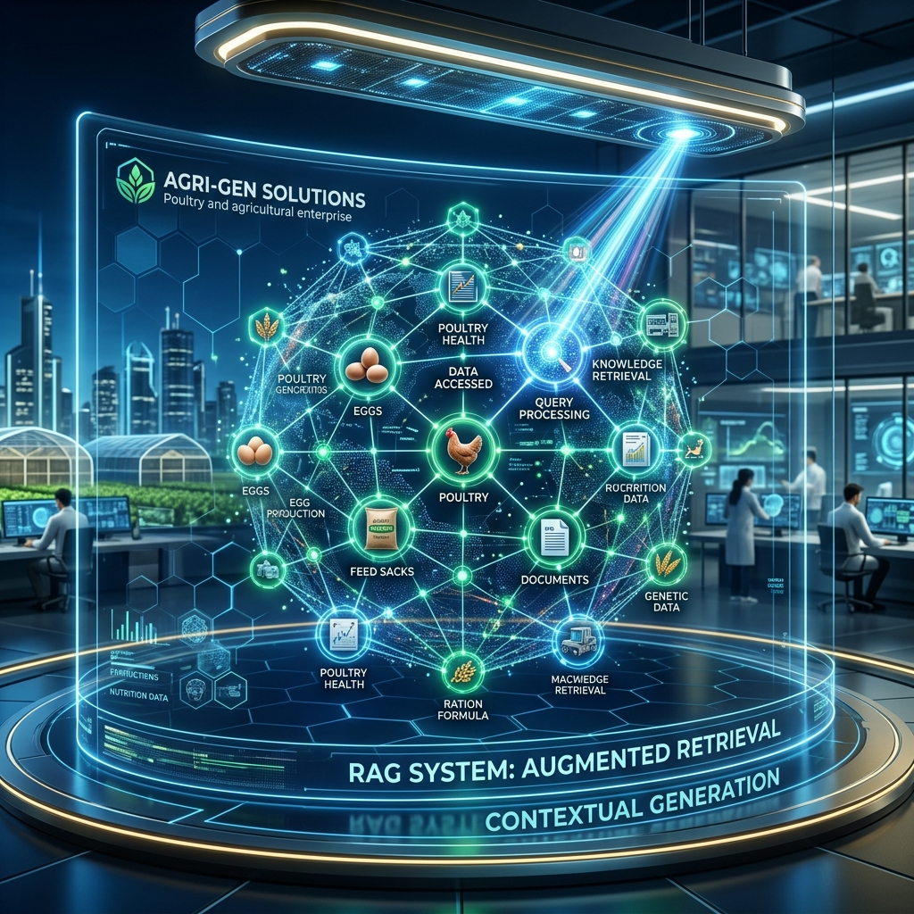

Современный сайт агропредприятия — это не картинки, это **данные**. Мы переделываем `incubird.ru` в экспертную систему, которая сама генерирует продажи через ИИ-поисковики.
Мы создаем структурированную базу знаний по птицеводству. Этот контент будет «скармливаться» нейросетям. Результат: когда фермер спрашивает в GPT: *"Как вырастить индюшат БИГ-6?"*, ИИ цитирует ваш сайт и дает ссылку на вашу форму заказа.
Фермеры часто работают "руками", им неудобно печатать. Мы оптимизируем сайт под голосовые ассистенты.
Больше никаких звонков менеджерам с вопросом "А есть на 20-е число?". Сайт будет напрямую соединен с остатками в Bitrix24. Клиент видит счетчик: *"Осталось 150 шт. КОББ 500 на вывод 15 мая"*. Это создает эффект дефицита и повышает конверсию в 2 раза.
Использование нейросетей позволяет создавать сотни страниц с ответами на вопросы по уходу за птицей. Это захватывает весь тематический трафик региона и превращает его в ваши заказы.